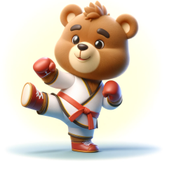
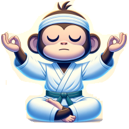

Note the martial art styles, physical medicine points of reference, and health promotion perspectives are all based upon personal experiences. The purpose of this guide is to give the reader an idea of Taichimand's background. If you are in need of a professional or expert, I and everyone affliated with Taichmand.com highly recommends to instead seek guidance from qualified professionals in the respective field.
About Taichimand
For as long as I remember I've been doing martial arts. My goal is to make my own martial arts system. I'll do this by using consistent methodologies to observe and test for consistent outcomes. Then explore the purpose and benefits of what is being applied. This website documents the findings and references the sources of my conclusions.
Learning Background
Child - Late Teens:
Uechi Ryu
Young Adult:
Modern Tai Chi Chuan, Kickboxing, Taekwondo
Post University:
Tiger Crane Kung Fu
Early Adult:
Certification with Tai Chi for Health Institute
Adult:
Sun, Wu, and Yang Style Tai Chi, Qigong, Physical Medicine
The Reserve
Uechi Ryu
Uechi Ryu- applied to strengthen the body, resilience, and discipline.
Tai Ji Quan
Tai Ji Quan / T'ai Chi Ch'üan- applied to enhance range of motion, coordination, and balance.
Hung Gar
Hung Gar- applied to strengthen the lower body, flexibility, and directional force.

Kickboxing
Kickboxing- applied to enhance reaction timing, motor control, and endurance.

Qigong
Qigong / Chi Kung- applied to enhance concentration, body awareness, body positioning, and internal balance.
Physical Medicine
Physical Medicine- applied to provide physical exercise to improve health and promote wellness.
Focuses
- Strength
- Range of Motion
- Balance
- Coordination
- Endurance
- Joint Strengthening
- Body Alignment
- Body Positioning
- Stances and Weight Dynamics
- Accuracy and Motor Control
- Proprioception
- Calibration of Force
- Directional Routines with Goals
- Reaction Timing
- Resilence
- Concentration
- Tool Use
- Flexibility
- Discipline
- Respect
- Self-Defense
- Conditioning
- Dilgence
- Innovation
Mission Statement
To provide accessible content for health promotion.